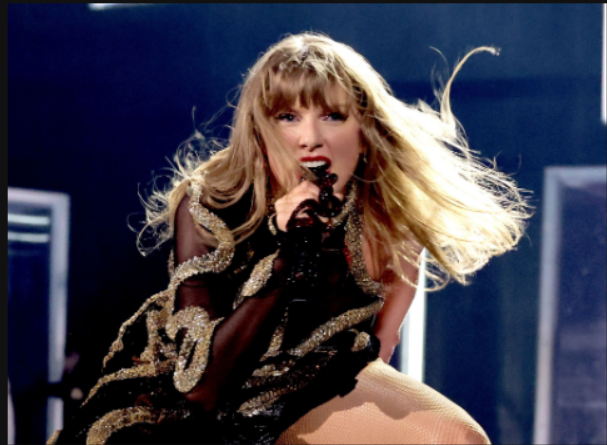
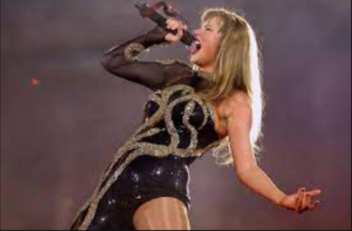

|  |  |
Taylor Alison Swift (born December 13, 1989) is an American singer-songwriter. Known for her autobiographical songwriting, artistic reinventions, and cultural impact, Swift is a leading figure in popular music and the subject of widespread media coverage, with a vast fanbase known as Swifties.
Swift signed to Big Machine Records in 2005, debuting as a country singer with the albums Taylor Swift (2006) and Fearless (2008). The singles "Teardrops on My Guitar", "Love Story", and "You Belong with Me" found crossover success on country and pop radio formats. She incorporated rock on Speak Now (2010) and electronic on Red(2012), later re calibrating her image from country to pop with the synth-pop set 1989 (2014); the ensuing media scrutiny inspired the hip-hop-imbued Reputation (2017). The albums contained the Billboard Hot 100 number-one singles "We Are Never Ever Getting Back Together", ce". "Bad Blood" and "Look What You Made Me Do"